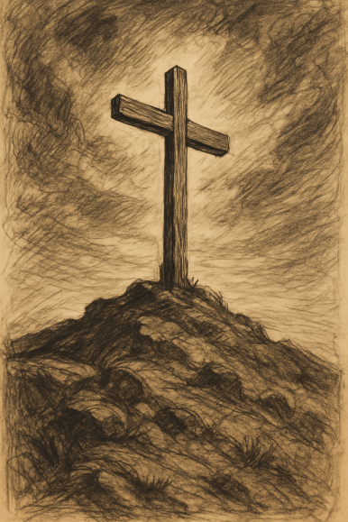

Reflexão da Páscoa (2025)

Do que realmente se trata a Páscoa?
## Coelhinho da páscoa, ovos de chocolate, guloseimas, doces, presentes, são todos elementos frequentemente associados à Páscoa, mas do que ela realmente se trata?
A Páscoa é uma festa religiosa, que se originou no Egito, antes do Senhor aplicar a décima praga contra os egípcios. Nela os israelitas sacrificaram um cordeiro sem defeito por família, passaram o sangue do cordeiro nas ombreiras e na verga da porta e comeram o cordeiro, pães asmos e ervas amargas às pressas já preparados para saírem, pois após Deus castigar com a morte de todos os primogênitos do Egito que não passaram o sangue, o povo de Israel finalmente foi liberto do Egito. Este é o sacrifício da Páscoa ao Senhor, comemoração de quando os israelitas foram livrados do castigo divino que sobreveio ao Egito.
-# Ex 12;
Este rito apresenta inúmeros símbolos que se conectam com a nova aliança. Neste evento o Egito representa o mundo, Israel a Igreja do Messias, e um cordeiro foi sacrificado por todos nós, o Cordeiro Imaculado que tira o pecado do mundo. O pão sem fermento representa a ausência do pecado em Cristo, o sacrifício perfeito para o aperfeiçoamento permanente dos santos. As ervas amargas representam toda a amargura e sofrimento que Jesus precisou padecer por nós.
-# 1Co 5.7-8; 1 Pe 1.19;
O Sangue do Cordeiro foi passado em nossas almas, na casa edificada sobre a Rocha, para aplacar a ira do Criador sobre nós. As casas como visto anteriormente representam as pessoas, da mesma forma que tiveram casas livradas da punição divina através do Sangue do Cordeiro, também haverão casas em que sofrerão da morte no dia do julgamento diante do trono branco.
-# Mt 7.24; Ap 20.12;
Da mesma forma que os israelitas já estavam preparados para saírem do Egito, devemos estar preparados para quando o Noivo retornar e então finalmente se iniciar as bodas do Cordeiro. Após a segunda morte dos que não foram lavados pelo Sangue do Cordeiro, os filhos de Deus caminharão à terra prometida, a Nova Jerusalém, onde não haverá mais morte, nem tristeza, nem choro, nem dor, pois o Egito já passou.
-# Mt 25; Ap 20.14; Ap 19.7;
A Páscoa é um tipo e a Santa Ceia (Eucaristia) antítipo, ou seja, a Páscoa prefigurou a Santa Ceia. A Santa Ceia é uma comemoração religiosa, um momento de comunhão e unidade entre os irmãos em Cristo, que celebra e anuncia a vida e a morte do Senhor, que ressuscitou dentre os mortos e voltará para buscar os seus.
-# 1 Co 11;
Jesus em sua última ceia com os discípulos antes de ser traído, tomou o pão, deu graças, partiu-o, deu a seus discípulos e disse "Isto é o meu corpo, que é dado por vós, fazei isto em memória de mim". Ele é o Pão da vida que desceu do céu, sacia nossa fome espiritual e todo aquele que dEle comer não perecerá, mas viverá eternamente com o Messias. O pão também representa o seu corpo que foi partido (sacrificado) por nós na cruz.
-# 1 Co 11.23-24; Jo 6.22-59; 1 Pe 2.24;
Jesus também na Ceia do Senhor, tomou o cálice e disse "Este cálice é a nova aliança no meu sangue, façam isso sempre que beberem em memória de mim". O cálice representa o Sangue do Cordeiro, que foi derramado no Calvário para trazer a nova aliança, a gloriosa aliança do Espírito, que através dela somos justificados, justificação essa que nos dá acesso à vida eterna com Cristo Jesus.
-# 1 Co 11.25; 2 Co 3.4-12
Quando segurava o pão, e o cálice, nosso Mestre nos alertou, para que façamos em memória dEle. Nós precisamos nos atentarmos para O colocar no centro de nossas vidas sempre, pois muitas vezes o mundo nos apresenta muitas distrações para desviar nossos olhos da cruz, da nossa própria cruz e da cruz de Cristo. Portanto, que ofereçamos nossa vida em sacrifício vivo, santo e agradável à Deus, que pagou por nós um preço imensurável que jamais poderíamos retribuir. Graça e paz à todos que leram até o final, feliz Páscoa!
-# 1 Co 11.24-25; 1 Pe 2.4-7; Lc 9.23; Rm 12.1;